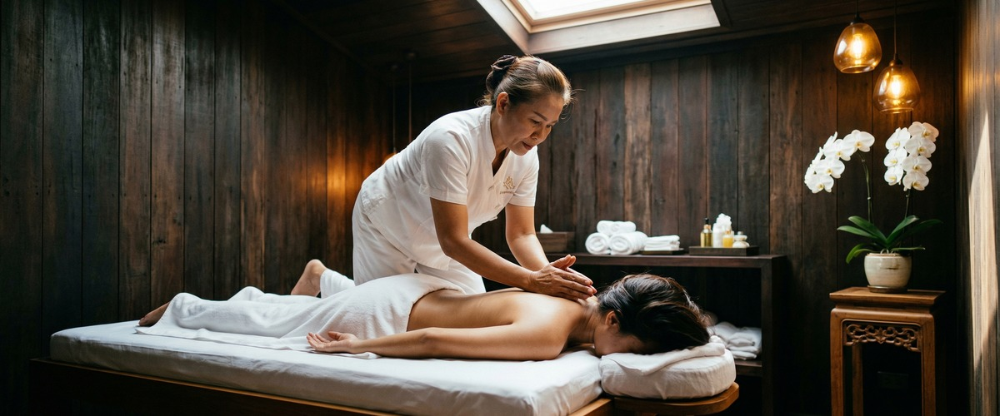
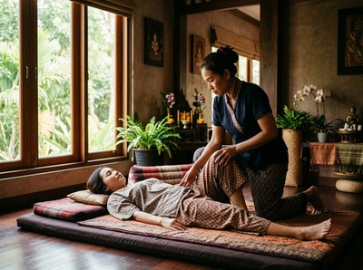
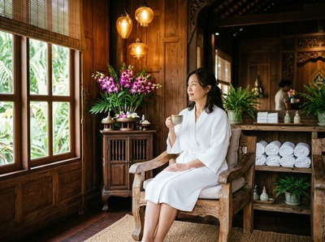

★★★★★ Quality gate failures: readability. Review and edit before removing this notice. ★★★★★
Serenity Thai Massage positions itself as an authentic Thai massage studio in Glasgow city centre, with a focus on traditional technique and a recently renovated treatment space.

If you found them while searching for Thai massage in Glasgow, there are genuine reasons to take a look.
Most visitors who keep searching do so for one reason. Serenity Thai Massage shows no pricing on its website, no therapist details, and no online booking. If you want to know what a session costs, or simply book at a time that suits you, that information is not there.

Serendipity Massage Therapy & Wellness is a professional team practice on Hope Street in Glasgow city centre. Every treatment uses techniques developed by head therapist Jariya Malone. Those techniques draw from traditional Thai massage and are applied consistently across the whole team.
Pricing is listed clearly before you book. The full treatment menu covers traditional Thai massage, Thai oil massage, hot stone massage, Swedish massage, Thai aromatherapy massage, and more. Book your session online at serendipitymassage.co.uk/book-now — any time, no phone call needed.
Serenity Thai Massage shows no pricing, no therapist details, and no booking system on its website. Serendipity lists all prices before you book, names its therapists and their training standard, and lets you schedule online.
Serenity does present a clear focus on authenticity and a calm space. Its location may suit some visitors depending on where they travel from. If those factors matter more to you than booking ease and clear pricing, it is worth a look. For clients who want credentials, clear costs, and online booking, Serendipity is the stronger fit.
Serendipity works well for office workers and professionals near Hope Street, Blythswood Square, and St Vincent Street. You can book a lunchtime or after-work session online without a phone call.
It also suits anyone who wants to confirm their therapist meets a clear, documented standard before they arrive. And it suits anyone researching Thai massage in Glasgow who needs to see pricing upfront.
From Serenity Thai Massage, head west along Bath Street or Sauchiehall Street toward the top of Hope Street. Turn south onto Hope Street and walk down to Central Chambers at number 93. Serendipity is on the first floor, Suite 50.
The walk takes around five to eight minutes. Buchanan Street and St Enoch subway stations are both close by if you prefer the underground.
Get driving directions to Serendipity Massage Therapy & Wellness:

Serendipity Massage Therapy & Wellness — Floor 1, Suite 50, Central Chambers, 93 Hope Street, Glasgow G2 6LD
Book your session today at serendipitymassage.co.uk/book-now.
Yes. Serendipity offers online booking at serendipitymassage.co.uk/book-now. Pick your treatment, choose a time, and confirm your appointment without calling. Serenity Thai Massage does not show an online booking system on its website.
Serendipity's treatments are built around techniques developed by head therapist Jariya Malone. Every therapist on the team is trained to the same standard. This keeps quality consistent across sessions. Serenity Thai Massage does not share therapist qualifications or training details on its website.
Serendipity is at Floor 1, Suite 50, Central Chambers, 93 Hope Street, Glasgow G2 6LD. The studio is in Glasgow's financial district. Buchanan Street and St Enoch subway stations are both within walking distance.
The full menu includes traditional Thai massage, Thai oil massage, Thai aromatherapy massage, hot stone massage, Swedish massage, sports massage, Thai head massage, Thai foot massage, and more. Options cover relaxation, recovery, and targeted work on areas of tension.
Yes. Serendipity lists all treatment prices on its website before you book. There are no surprises at checkout. Serenity Thai Massage does not show pricing on its website, which makes it hard to compare costs before you commit.
Serendipity is a professional team practice, not a sole-trader studio. Head therapist Jariya Malone developed the techniques used in every session. All therapists are trained to the same standard. That means you get the same quality of treatment each time, no matter who you see.
Book your appointment online at serendipitymassage.co.uk/book-now.